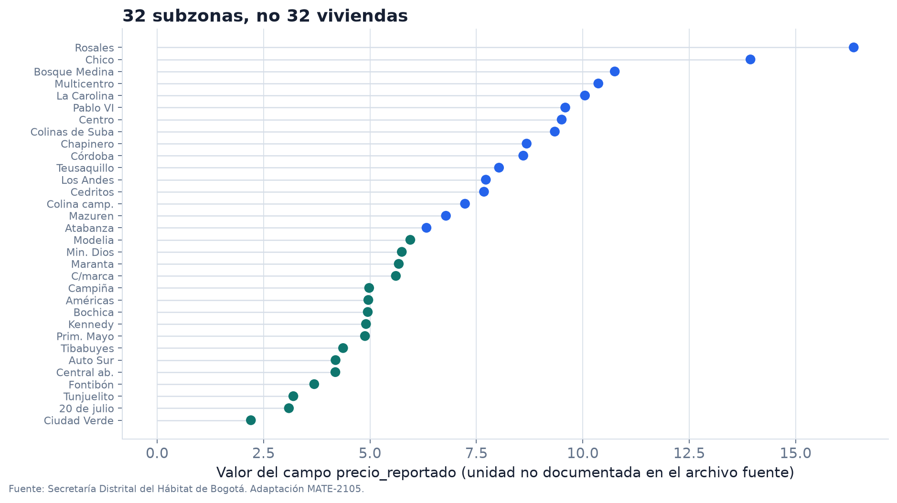

Antes del modelo: qué representan los datos
Una tabla no trae incorporada su interpretación. Hay que averiguar quién produjo cada fila, qué significa cada columna y para qué pregunta podría servir.
¿Qué error cometeríamos si tratáramos una subzona de Bogotá como si fuera una vivienda individual?
| Pregunta | Lo que necesitamos saber |
|---|---|
| ¿Qué representa? | persona, vivienda, subzona, día, transacción |
| ¿Cómo entró a la tabla? | muestreo, registro administrativo, sensor, encuesta |
| ¿Cuándo fue medida? | periodo y frecuencia |
| ¿Qué quedó por fuera? | población no observada, faltantes, filtros |
Una fila es una unidad de observación, no solo una posición en un arreglo.
La Secretaría Distrital del Hábitat publica un recurso sobre precios de vivienda nueva en Bogotá. Para el curso congelamos un subconjunto de 32 subzonas y siete columnas.

Fuente: Secretaría Distrital del Hábitat de Bogotá, Caracterización precios vivienda nueva, licencia CC BY 4.0. Adaptación MATE-2105.
| subzona | precio_reportado | estrato_promedio | area_promedio | alcobas_promedio | banos_promedio | parqueaderos_promedio |
|---|---|---|---|---|---|---|
| Rosales | 16.365 | 5.922 | 177.316 | 2.673 | 3.776 | 2.981 |
| Chicó | 13.939 | 5.905 | 128.044 | 2.225 | 3.105 | 2.152 |
| Bosque Medina | 10.751 | 4.699 | 151.226 | 2.533 | 3.037 | 2.467 |
| Multicentro | 10.365 | 5.647 | 94.071 | 2.086 | 2.625 | 1.786 |
| Centro | 9.504 | 3.195 | 63.383 | 1.744 | 1.799 | 0.988 |
¿Cuáles columnas describen una vivienda y cuáles resumen una subzona?
area_promedio parece claro, pero todavía quedan preguntas:
La documentación de una variable forma parte del dato.
El archivo original llama precios a una columna, pero el recurso descargado no documenta su unidad.
No afirmaremos que son pesos, millones de pesos ni precio por metro cuadrado.
En el curso la llamamos precio_reportado: podemos operar con sus valores y, al mismo tiempo, limitar lo que interpretamos.
En parejas, escriban una frase para cada punto:
precio_reportado.Tiempo: 6 minutos. Luego contrastamos dos respuestas en el tablero.
32 subzonas incluidas en el archivo congelado.
Todas las subzonas, proyectos o viviendas nuevas de Bogotá en un periodo determinado.
Pasar de una a otra exige supuestos sobre cobertura y representatividad.
Unidad + cantidad o clase + momento de predicción + uso previsto
Ejemplo:
Para una subzona descrita por promedios observados, estimar el indicador
precio_reportadoy estudiar qué tan lejos quedan las predicciones en subzonas no usadas para ajustar.
La frase no promete valorar viviendas particulares.
| Pregunta | Tipo de salida | Familia de tarea |
|---|---|---|
| estimar un indicador numérico | número continuo | regresión |
| asignar una categoría | clase | clasificación |
| encontrar grupos sin etiqueta | grupo | aprendizaje no supervisado |
| ordenar alternativas | puntaje o rango | recomendación / ranking |
Primero fijamos la salida; después escogemos una familia de modelos.
\[ X\in\mathbb R^{m\times p},\qquad y\in\mathbb R^m \]
Al pasar a numpy, los números siguen allí, pero el significado depende de conservar nombres, unidades y procedencia por separado.
| Objeto | Ejemplo | ¿Cómo se fija? |
|---|---|---|
| familia de modelos | funciones lineales | elección de modelación |
| parámetro | coeficientes \(\theta\) | se ajusta con datos de entrenamiento |
| hiperparámetro | intensidad de regularización | se selecciona con validación |
No llamaremos “parámetro” a cualquier número que aparezca en el código.
Usa observaciones con resultado conocido para determinar parámetros.
\[ (X_{\mathrm{train}},y_{\mathrm{train}})\longmapsto \widehat\theta \]
Mantiene \(\widehat\theta\) fijo y calcula una salida para nuevas entradas.
\[ x_{\mathrm{nuevo}}\longmapsto f_{\widehat\theta}(x_{\mathrm{nuevo}}) \]
| Objeto | Pregunta |
|---|---|
| pérdida | ¿qué cantidad guía el ajuste? |
| métrica | ¿cómo resumimos el comportamiento del modelo? |
| baseline | ¿qué regla simple debe superar? |
Pueden coincidir, pero no son sinónimos. Un algoritmo puede minimizar log-loss y reportarse con accuracy, recall o una matriz de confusión.
Un resultado solo tiene contexto cuando sabemos contra qué se compara.
\[ \mathcal D=\mathcal D_{\mathrm{train}}\,\dot\cup\,\mathcal D_{\mathrm{test}} \]
Con train preguntamos: ¿qué parámetros se ajustan a estos datos?
Con test preguntamos: ¿cómo se comporta el procedimiento en observaciones que no participaron en el ajuste?
Si una elección cambió después de mirar test, test ya participó en el diseño.
Esto incluye escoger variables, transformaciones aprendidas, hiperparámetros, umbrales y hasta la semilla “que se ve mejor”.
Para esas elecciones necesitaremos un conjunto de validación o validación cruzada.
Hay leakage cuando el procedimiento de entrenamiento accede a información que no estaría disponible al predecir.
Ejemplos:
\[ (X,Y)_{\mathrm{train}}\sim P_{\mathrm{train}},\qquad (X,Y)_{\mathrm{uso}}\sim P_{\mathrm{uso}} \]
Una evaluación histórica es informativa cuando ambas distribuciones son suficientemente comparables para el uso previsto.
Cambios de población, instrumento, política o tiempo pueden romper esa comparación.
Una tabla observacional puede mostrar que dos variables cambian juntas. Eso no identifica por sí solo el efecto de intervenir sobre una de ellas.
Si estrato_promedio y precio_reportado están asociados, ¿subir administrativamente el estrato produciría el cambio predicho por una recta?
Predicción y causalidad responden preguntas distintas.
| Módulo | Pregunta matemática dominante |
|---|---|
| 0 | ¿qué representan los datos y qué incertidumbre introducen? |
| 1 | ¿cómo se ajustan y evalúan modelos de regresión y clasificación? |
| 2 | ¿cómo se construyen y entrenan redes neuronales? |
| 3 | ¿cómo se diagnostican errores y cambios de distribución? |
| 4 | ¿qué estructura se aprende sin etiquetas? |
| 5 | ¿cómo se reproduce y comunica un análisis completo? |
Cada semana combina:
Las diapositivas orientan la sesión; el libro contiene el desarrollo que debe sobrevivir después de la clase.
| Recurso | Uso principal |
|---|---|
| página web del curso | fechas, ruta, materiales y entregas |
| libro | definiciones, derivaciones, ejemplos y ejercicios |
| notebook de clase | cálculo reproducible de la sesión |
| Bloque Neón | anuncios y entrega de actividades |
No use una copia local antigua para verificar una fecha de entrega.
Una propuesta inicial debe nombrar:
La elección del algoritmo viene después.
Predecir el precio de la vivienda en Bogotá con inteligencia artificial.
Estimar un indicador agregado de precio para subzonas presentes en una fuente determinada y comparar el error fuera del ajuste con predecir la media de entrenamiento.
La segunda deja a la vista qué observa y qué no promete.
Lean esta idea: “detectar estudiantes que van a perder una materia”.
En grupos de tres, formulen cuatro preguntas antes de aceptar el proyecto:
Tiempo: 7 minutos.
El laboratorio diagnóstico pide:
Su función principal es detectar a tiempo dificultades de entorno y lenguaje común.
El jueves haremos el primer experimento completo con load_wine.
Antes de ajustar un modelo debemos poder terminar tres frases:
Cada fila representa…
La salida que queremos estudiar es…
Con estos datos no podemos concluir…
Si falta una de las tres, todavía no estamos listos para interpretar un puntaje.